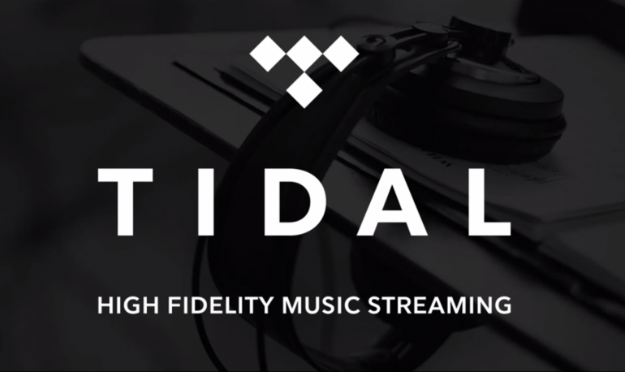
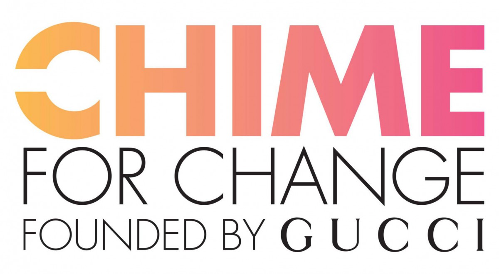

<html>
<head>
  <link href="stylesheet.css" type="text/css" rel="stylesheet">
  <link href="https://fonts.googleapis.com/css?family=Anton" rel="stylesheet">
<link href="https://fonts.googleapis.com/css?family=Archivo+Narrow|Oswald" rel="stylesheet">
  </head>
  </html>
  <div class="ctagrid">
  <div class="ctahead">
<center> Call to Action </center>
  <div class="topnav">
  <a href="index.html">Home</a>
  <a href="Production.html">Production</a>
  <a href="VC.html">Vocal and Choreography</a>
  <a href="Politics.html">Politics</a>
  <a href="CTP.html">Contemporaries</a>
  <a class="active" href="CTA.html">Call to Action</a>
  </div>
  </div>
  <div class="tidle">
<a href="http://tidal.com/us" target="_blank"></a>
  </div>
  <div class="tidletext">
<p>Beyonce and Jay-Z are the owners of Tidal. Tidal is a subscription-based music
 streaming service. It is the first with High Fidelity and High definition music videos.
 A monthly subscription costs $9.99 for the standard “premium” service. Click on Photo to Tidal.</p>
  </div>
  <div class="ivypark">
<a href="http://www.ivypark.com" target="_blank"> </a>
  </div>
  <div class="ivyparktext">
 <p>Ivy Park is a activewear clothing line by Beyonce with fashionable clothes fit for every occasion. 
It is available worldwide in stores such as: Topshop, Asos, Pacsun etc. 
Click on Photo to Ivy Park</p>
  </div>
  <div class="hercause">
<a href="https://www.globalcitizen.org/en/partners/chime-for-change-founded-by-gucci/" target="_blank">  </a>
  </div>
  <div class="hercausetext">
<p>Beyonce is a co-founder of “CHIME TO CHANGE”. Is a foundation that empowers young girls around the 
world through education health and justice. 
Click on Photo to CHIME TO CHANGE</p>

  </div>
  </div>